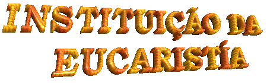

 Quando chegou o momento
de Sua partida para a eternidade, JESUS bondade infinita nos ofereceu o melhor
presente: instituiu a Sagrada Eucaristia, Presença Real DELE Mesmo com Seu
Corpo, Sangue, Alma e Divindade na Hóstia e no Vinho Consagrados. Esta foi
à maneira sensível que o SENHOR JESUS escolheu para permanecer junto
do povo que ELE Salvou e Redimiu. ELE é verdadeiramente o pão descido do Céu,
alimento espiritual, força e inspiração para a humanidade na caminhada existencial,
poderoso elo que une e congrega todos os fieis ao redor de um único Altar até a
consumação dos séculos, porque é DEUS com o PAI e o ESPÍRITO SANTO.
Quando chegou o momento
de Sua partida para a eternidade, JESUS bondade infinita nos ofereceu o melhor
presente: instituiu a Sagrada Eucaristia, Presença Real DELE Mesmo com Seu
Corpo, Sangue, Alma e Divindade na Hóstia e no Vinho Consagrados. Esta foi
à maneira sensível que o SENHOR JESUS escolheu para permanecer junto
do povo que ELE Salvou e Redimiu. ELE é verdadeiramente o pão descido do Céu,
alimento espiritual, força e inspiração para a humanidade na caminhada existencial,
poderoso elo que une e congrega todos os fieis ao redor de um único Altar até a
consumação dos séculos, porque é DEUS com o PAI e o ESPÍRITO SANTO.
São Mateus registrou aquele inesquecível
momento escrevendo as palavras que JESUS falou:
"Enquanto comiam
(a Ultima Ceia),
JESUS tomou um pão e, tendo abençoado, partiu e, distribuindo aos discípulos, disse:
Tomai e comei, isto é o Meu Corpo
. Depois, tomou um cálice e, dando graças, deu-lhos
dizendo: dele Bebei todos, pois isto é o Meu
Sangue, o Sangue da Aliança, (nova Aliança) que é derramado por muitos para remissão dos
pecados". (Mt 26,26-28)
São Marcos registrou assim:
"Enquanto comiam, ELE
tomou um pão, abençoou, partiu-o e distribuiu-lhes, dizendo: Tomai isto é o Meu Corpo.
Depois, tomou um cálice e, dando graças, deu-lhes, e todos dele beberam. E
disse-lhes: Isto é o Meu Sangue, o Sangue
da Aliança (nova Aliança), que é derramado em favor de muitos". (Mc 14,22-24)
São Lucas anotou as seguintes palavras do
SENHOR:
"E tomou um pão, deu
graças, partiu e distribuiu-o a eles, dizendo: Isto
é o Meu Corpo que é dado por vós. Fazei isto em Minha memória. E, depois de comer, fez o mesmo com o cálice, dizendo:
Este cálice é a Nova Aliança em Meu Sangue, que é
derramado em favor de vós". (Lc 22,19-20)
São Paulo descreve como JESUS lhe ensinou:
"Com efeito, eu mesmo recebi
do SENHOR o que vos transmiti: na noite em que foi entregue o SENHOR JESUS tomou
o pão e, depois de dar graças, partiu-o e disse: Isto
é o Meu Corpo, que é para vós; fazei isto em memória de MIM. Do mesmo modo, após a Ceia, também tomou o cálice, dizendo: Este cálice é a nova Aliança em Meu Sangue; todas as vezes
que dele beberdes, fazei-o em memória de MIM".
(1Cor 11,23-25)
O Apóstolo São João que estava ao lado do Mestre
descreveu assim as palavras que JESUS pronunciou na Última Ceia:
"Em verdade, em verdade, vos
digo: se não comerdes a Carne do FILHO do Homem e não beberdes o seu Sangue, não tereis
a vida em vós. Quem come a Minha Carne e bebe o Meu Sangue tem a vida eterna e EU
o ressuscitarei no último dia. Pois a Minha Carne é verdadeira comida e o Meu
Sangue, verdadeira bebida. Quem come a Minha Carne e bebe o Meu Sangue permanece
em MIM e EU nele". (Jo 6,53-56)
Homem e não beberdes o seu Sangue, não tereis
a vida em vós. Quem come a Minha Carne e bebe o Meu Sangue tem a vida eterna e EU
o ressuscitarei no último dia. Pois a Minha Carne é verdadeira comida e o Meu
Sangue, verdadeira bebida. Quem come a Minha Carne e bebe o Meu Sangue permanece
em MIM e EU nele". (Jo 6,53-56)
As palavras de JESUS são claras
e compreensíveis. Naquele momento de despedida criou o misterioso Fenômeno
da Transubstanciação, que acontece em todas as Santas Missas no instante da
Consagração. As espécies de pão e vinho são transformadas pelo ESPÍRITO SANTO
no seu Corpo, Sangue, Alma e Divindade, mantendo, entretanto a aparência original
das mesmas espécies.
Isto significa dizer, que verdadeiramente JESUS
está presente na Hóstia Consagrada, em Pessoa e Divindade. Então, a Sagrada
Comunhão não pode e não deve ser considerada como um "símbolo" ou como uma
"representação"
do SENHOR, porque é ELE Mesmo. O SENHOR está Realmente Presente na menor
fração de uma Partícula Consagrada, em todos os sacrários do mundo. Está sempre
disponível para saciar a fome espiritual, iluminar as almas, acolher as súplicas e preces
de todos que buscam o seu auxílio, ajudando e inspirando ao longo da existência, protegendo
e defendendo as pessoas contra as insídias de Satanás e consolando-as nos reveses da
vida. Cheio de amor e misericórdia ELE Se apresenta modestamente numa partícula de
trigo e água e no vinho consagrado. Nesta simplicidade ELE esconde todo o seu poder
e a sua divindade. Porque ELE quer que cada um de nós, O procure não com pompas
e falatórios, mas com humildade, reconhecendo as próprias fraquezas e limitações.
Assim, prostrados diante DELE, conscientes de nossa insignificância e de nosso
nada, com simplicidade de coração devemos manifestar a súplica mais sincera,
para alcançarmos DELE as graças que emanam do Seu
Divino e imenso Amor.
Esta realidade sinaliza ao raciocínio a necessidade
de cada pessoa procurar aumentar cada vez mais, de alguma forma, a intensidade da atenção
e do afeto que devemos dedicar ao SENHOR. Não como atitude pensada, programada
e interesseira, mas como gesto normal, gerado de dentro para fora, do interior de
nosso coração para o Coração do CRIADOR, um procedimento consciente, que deve ser
cultivado habitualmente. Esta preocupação representará uma continua e permanente
oração a DEUS, oração perseverante que deve ser modulada e adornada com as preces
que recitamos todos os dias. Isto, para que elas sejam a nossa resposta de amor, num
carinhoso tributo de agradecimento, por todos os bens que ELE nos proporciona,
inclusive pelo dom da própria vida.

"CORPUS CHRISTI"
Desde o tempo apostólico a Igreja instituiu a Festa
do Corpo de Cristo, uma homenagem de gratidão a JESUS pela permanente presença Real
em nosso meio. A Festa era celebrada na Quinta-feira da Semana Santa, pelo fato da Sagrada
Eucaristia ter sido instituída por JESUS na Quinta-feira, durante a Ultima Ceia no Cenáculo,
em Jerusalém, véspera de sua morte na Cruz. Todavia, como na Semana Santa celebramos
a Morte e Gloriosa Ressurreição do SENHOR com a recordação de todos os abomináveis
sofrimentos de JESUS, o espírito de tristeza domina a maior parte da liturgia. Por essa
razão, na continuidade dos anos, a Igreja decidiu escolher outra data, para melhor
e mais efusivamente homenagear o SENHOR e LHE agradecer todos os benefícios
de Sua Admirável Obra Redentora. Assim, no ano 1246, por ordem de Sua Santidade
o Papa Urbano IV, a celebração da Festa do Corpo de CRISTO foi inserida
no calendário litúrgico para ser realizada na Quinta-feira, após o domingo
em que celebramos a Festa da SANTÍSSIMA TRINDADE.
permanente presença Real
em nosso meio. A Festa era celebrada na Quinta-feira da Semana Santa, pelo fato da Sagrada
Eucaristia ter sido instituída por JESUS na Quinta-feira, durante a Ultima Ceia no Cenáculo,
em Jerusalém, véspera de sua morte na Cruz. Todavia, como na Semana Santa celebramos
a Morte e Gloriosa Ressurreição do SENHOR com a recordação de todos os abomináveis
sofrimentos de JESUS, o espírito de tristeza domina a maior parte da liturgia. Por essa
razão, na continuidade dos anos, a Igreja decidiu escolher outra data, para melhor
e mais efusivamente homenagear o SENHOR e LHE agradecer todos os benefícios
de Sua Admirável Obra Redentora. Assim, no ano 1246, por ordem de Sua Santidade
o Papa Urbano IV, a celebração da Festa do Corpo de CRISTO foi inserida
no calendário litúrgico para ser realizada na Quinta-feira, após o domingo
em que celebramos a Festa da SANTÍSSIMA TRINDADE.
A palavra Corpus Christi é latina e significa
"Corpo de CRISTO", que é a mesma Sagrada Comunhão, Sagrada Eucaristia, Sagrada Espécie,
Santíssimo Sacramento e Corpo de DEUS.
Todos os anos, em muitas cidades do mundo
assim como no Brasil, os cristãos se unem e por iniciativa pessoal enfeitam
as ruas por onde passará a Procissão com a autoridade eclesiástica
conduzindo o Ostensório com JESUS Sacramentado. São construídos
lindos desenhos, verdadeiros tapetes com flores e outros materiais
artisticamente utilizados, numa sincera e espontânea manifestação de
carinho e amor ao Santíssimo Sacramento. Na Bélgica, em 1246, quando a
Festa entrou para o Calendário Litúrgico, os cristãos fizeram a primeira
homenagem nas ruas da cidade de Liege, enfeitando-as de modo atraente e
admirável, formando imensos tapetes coloridos, por onde passou a Procissão
com JESUS Sacramentado.
A SANTA MISSA
A Santa Missa ou Celebração Eucarística é onde
recebemos a Sagrada Comunhão e onde as nossas orações alcançam plenitude, a maior
grandeza e  intensidade. Ela é o Sacrifício da Nova Aliança entre DEUS
e a humanidade de todas as gerações, consumada no Calvário com o Sangue
Redentor de JESUS e é celebrada em todas as Santas Missas de modo incruento,
mas real e autêntico. JESUS a vítima perfeita, está verdadeiramente presente
em Corpo, Sangue, Alma e Divindade, escondido nas aparências de pão e vinho,
e se oferece a Si Mesmo ao PAI ETERNO pelas mãos do sacerdote, seu ministro
celebrante, como fez na Ultima Ceia com os Apóstolos, em Jerusalém, quando
instituiu a Sagrada Eucaristia celebrando a primeira Santa Missa. Então a Santa
Missa é essencialmente o mesmo Sacrifício da Cruz, apenas no Gólgota
foi cruento, com derramamento de sangue, e no Altar é incruento,
ou seja, sem o sofrimento real de CRISTO.
intensidade. Ela é o Sacrifício da Nova Aliança entre DEUS
e a humanidade de todas as gerações, consumada no Calvário com o Sangue
Redentor de JESUS e é celebrada em todas as Santas Missas de modo incruento,
mas real e autêntico. JESUS a vítima perfeita, está verdadeiramente presente
em Corpo, Sangue, Alma e Divindade, escondido nas aparências de pão e vinho,
e se oferece a Si Mesmo ao PAI ETERNO pelas mãos do sacerdote, seu ministro
celebrante, como fez na Ultima Ceia com os Apóstolos, em Jerusalém, quando
instituiu a Sagrada Eucaristia celebrando a primeira Santa Missa. Então a Santa
Missa é essencialmente o mesmo Sacrifício da Cruz, apenas no Gólgota
foi cruento, com derramamento de sangue, e no Altar é incruento,
ou seja, sem o sofrimento real de CRISTO.
Pelos Atos dos Apóstolos, vê-se que após a
ressurreição do SENHOR, os Discípulos continuando a Obra de CRISTO, celebravam
a Santa Missa e os fieis participavam ardorosamente de todas as celebrações:
"Eles se mostravam
assíduos ao ensinamento dos apóstolos, à comunhão fraterna, à fração do pão e às
orações". (At 2,42)
"Dia após dia, unânimes,
freqüentavam assiduamente o Templo e partiam o pão pelas casas, tomando o alimento
com alegria e simplicidade de coração". (At 2,46)
A palavra Missa é também de
origem latina e passou a ser usada no século VI. Anteriormente a Santa
Missa era conhecida por outros nomes: Sinaxe, Misterium, Fractio Panis
(Fração do Pão), Collecta, Oblatio (Oblação), Liturgia, etc. Muitos
desses nomes utilizados antigamente para denominar a Celebração
Eucarística, hoje são títulos de partes da Santa Missa.
São três os aspectos fundamentais que acontecem na
celebração de uma Santa Missa:
- a Presença Real e Verdadeira do
SENHOR.
- o sacrifício de NOSSO SENHOR
e da Igreja (de todos os seus membros).
- a nossa comunhão com CRISTO
e com os irmãos.
Por isso mesmo a Igreja ensina, que a Eucaristia, Santa
Missa ou Santo  Sacrifício, é um precioso sacramento porque é o próprio DEUS. É o memorial
da Paixão, Morte e Gloriosa Ressurreição de JESUS, é o sacrifício dos irmãos que participam
e que recebem o SENHOR em comunhão, e é também, alimento espiritual para a vida
eterna de cada um.
Sacrifício, é um precioso sacramento porque é o próprio DEUS. É o memorial
da Paixão, Morte e Gloriosa Ressurreição de JESUS, é o sacrifício dos irmãos que participam
e que recebem o SENHOR em comunhão, e é também, alimento espiritual para a vida
eterna de cada um.
Para melhor fixação, acrescentaremos que a Santa Missa
compreende quatro partes, a saber: Ritos Iniciais, Liturgia da Palavra, Liturgia Eucarística
e Ritos Finais. Como os nomes indicam: os Ritos Iniciais são constituídos pela procissão de
entrada do celebrante e dos demais auxiliares e as orações iniciais; as leituras dos fieis e
a homilia do celebrante constitui o espaço da Liturgia da Palavra; a Liturgia Eucarística
começa no Ofertório, passa pela Oração Eucarística, Consagração e termina após a
Comunhão dos fieis; os avisos paróquias, as ultimas orações e a benção sacerdotal,
constituem os Ritos Finais.
Próxima
Página
 Página Anterior
Página Anterior
Retorna ao Índice